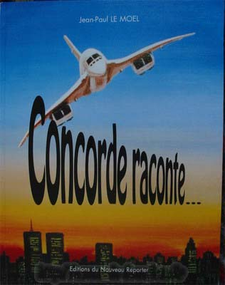
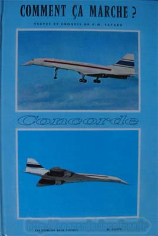
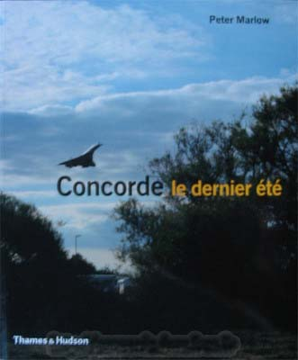
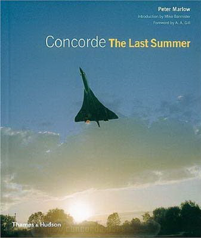
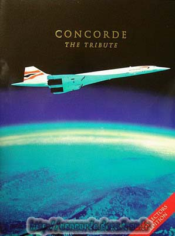
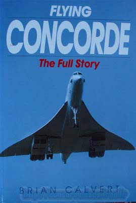
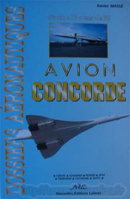
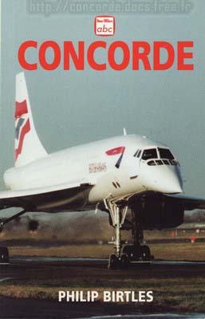

Voici d'autres ouvrages dédiés à Concorde :
Concorde raconte ... - Jean Paul Le Moel - Editions du nouveau reporter - 180p 

Une autre façon de raconter Concorde.
Comment ça marche - C.H. Tayard - Editions Rene Touret - 18p 

Petit livre agréable à parcourir, simple et pédagogique.
Concorde le dernier été - Peter Marlow - Thames & Hudson - 22x19 144p 
 
Ce livre, présenté ici dans ses 2 éditions -Française et Anglaise-
retrace les derniers mois d'exploitation commerciale de Concorde.
Concorde The Tribute - 2005 - Adrian Quine - FFPMedia - 31x24 128p 

De nombreuses informations sur Concorde.
Flying Concorde The Full Story - Brian Calvert - Growood - 23x16 296p 

Toute l'histoire de Concorde, de l'accord France/Angleterre jusqu'au crash de 2000.
Dossiers aéronautiques - Xavier Massé - Les nouv. éditions Latines - 217p 

Lecture très agréable de ce dossier spécial Concorde.
Beaucoup d'informations pointues et inédites.
CONCORDE -2000 - Philip Birtles - Ian Allan Ltd - 18x12 96p 

Mini format, mais maxi informations dans ce petit ouvrage Anglais qui retrace toute la vie de Concorde.
Des photos forcément petites, mais nombreuses (couleur et noir & blanc) et inédites.
Un livre bien plus complet que ne laisse paraitre son format.